Our Partners
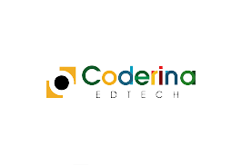
 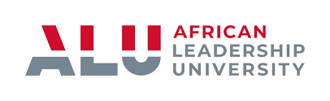
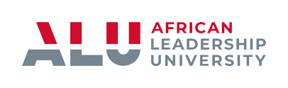
 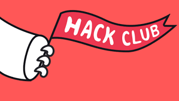
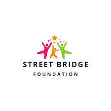
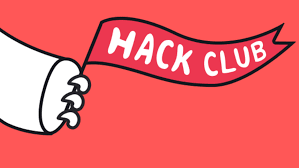
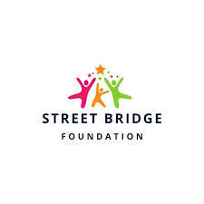
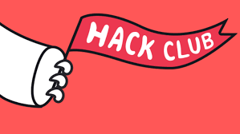
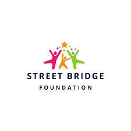
Join the innovation journey and become part of the future of tech.
Imagine a future where Kigali stands as a global hub for technological innovation, a beacon of ingenuity fueled by the talent of African youth. This is the vision of the Silicon Valley of Africa (SVA) initiative, a student-led movement founded by high school student Ismael Kaleeba.
SVA is committed to empowering African youths with the skills to develop cutting-edge technologies, create homegrown solutions for local challenges, and compete in the global tech marketplace. By leveraging Kigali’s rapid growth, supportive government policies, and entrepreneurial spirit, SVA aims to transform the city into a center for technological excellence and innovation.
The initiative serves as a launchpad for young innovators, providing them with mentorship, resources, and opportunities to advance the practical application of emerging technologies. From robotics competitions to hands-on STEM education, SVA is crafting the leaders and innovators who will shape Africa's future.
In collaboration with the Street Bridge Foundation, the WIN Hackathon bridges the digital divide by providing tools, training, and mentorship to underserved youth. These efforts are designed to unlock the potential of street-connected youth, equipping them with the confidence and skills to thrive in a technology-driven world.
By integrating these youth into the SVA ecosystem, the hackathon not only offers immediate opportunities but also connects them to a broader network of innovation and learning. This collaboration embodies SVA’s mission to ensure that no talent is left untapped and that every young mind has the opportunity to contribute to Africa’s technological renaissance.
We invite all stakeholders, partners, and sponsors to come together to make this event a huge success. Whether it be funding, mentorship, or resources – your contribution will be indispensable in the successful implementation of this initiative. Let us create lasting change by empowering street-connected youth with the means to be successful in creating change that is tangible for and to our society. Let's team up to make dreams come true and build a brighter future for these young minds.
Get Involved
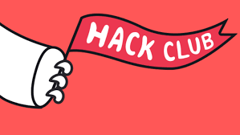
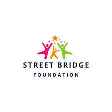